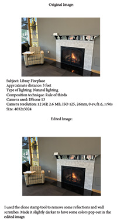

Digital Photography Project for AENG 110 class |
||
| Home Bookmark Project Digital Photography Project Infographic Project | ||
|

My Digital Photography project Click for enlarged Photographs |
This is my Digital Photography project for my AENG110 class. As you can see here I took some photos of things around the campus, dorm room, and the park my hometown Malvern. |
Home Bookmark Project Digital Photography Project Infographic Project |
© 2025 Connor Scandone |